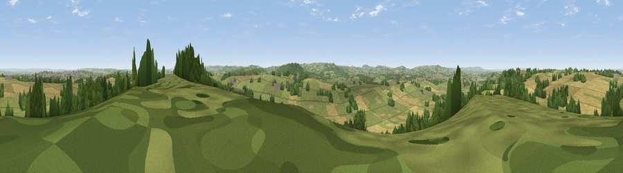

Coker Hill
#12820 in England · top 27% of its area beats it · near West CokerThe view, rendered

A 360° render of this exact spot computed from the terrain model, tree cover and land cover — summer colours, afternoon light, calibrated against photographs of famous viewpoints. Real trees, hedges and buildings will differ in detail.
The panorama
Grey silhouette: terrain skyline in each direction (720 bearings, Earth curvature and refraction included). Dashed green: skyline with trees (+15 m) and buildings (+8 m) as obstacles. Blue strip: how far the ground is visible on each bearing.
Where the view opens
Wedge length = distance to the farthest visible ground on that bearing (vegetation-aware). Rings at 10, 25 and 50 km.
What fills the view
51% grassland · 33% cropland · 14% woodland · 3% built-up
Angular shares of the visible panorama (visual magnitude), not map area. Landscape diversity 0.47 (0–1 Shannon).
Key numbers
More beautiful places nearby
The staircase of upgrades: each row has a higher view potential than everything closer. Driving times are estimates from straight-line distance, calibrated against real road routing — check an actual route before setting out.
| Place | Direction | Drive | Score |
|---|---|---|---|
| Viewpoint near West Coker | ESE · 1 km | ~3 min | 60.3 |
| Viewpoint near Odcombe | N · 3 km | ~6 min | 63.4 |
| Brympton Hill | WNW · 4 km | ~9 min | 63.9 |
| Montacute Castle | NNW · 4 km | ~9 min | 69.5 |
| Viewpoint near Montacute | NNW · 4 km | ~9 min | 69.8 |
| Ham Hill | NW · 5 km | ~11 min | 73.5 |
| Viewpoint near Hewish | WSW · 11 km | ~20 min | 78.5 |
| Lewesdon Hill | SSW · 14 km | ~25 min | 83.3 |
50.91717, -2.70098 · source: osm peak · position refined by local search. Computed location — check access rights before visiting.